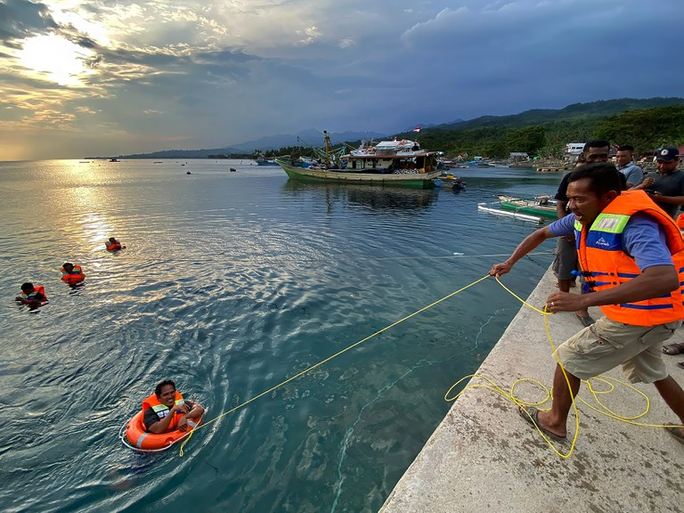
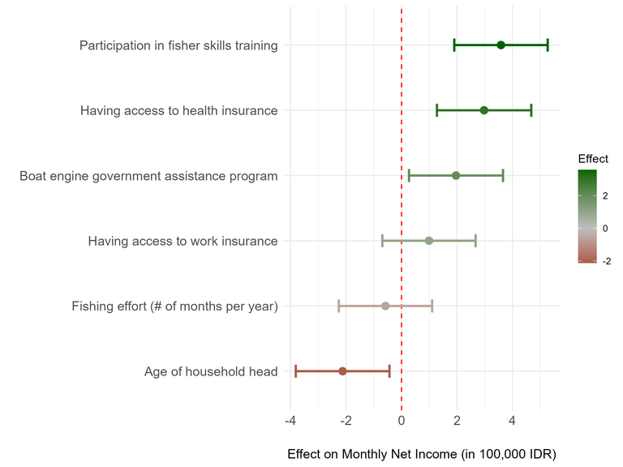
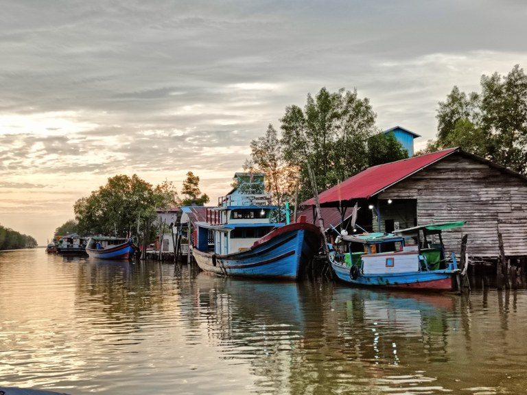
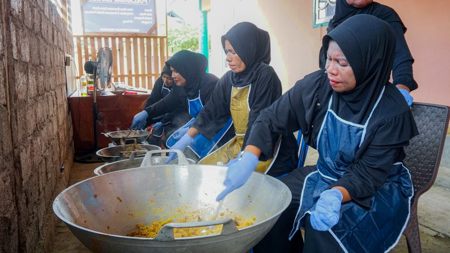
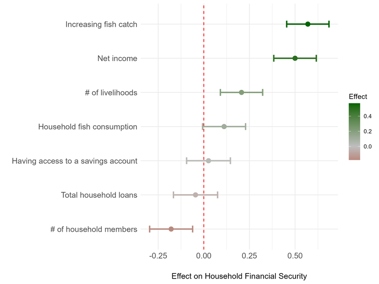
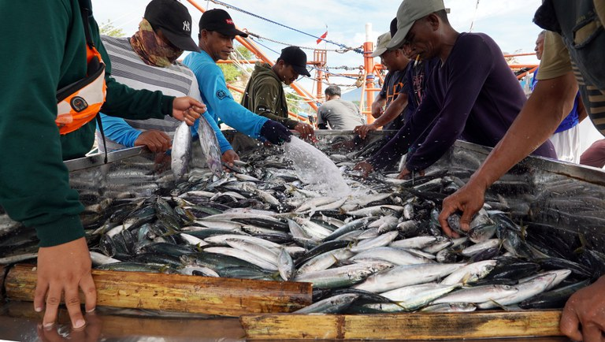

Fishing for Solutions: Data-driven Pathways to Sustainable Fisheries in Indonesia
The USAID Collaborative Fisheries Management (Ber-IKAN) activity takes a holistic, collaborative, and data-driven approach to achieve sustainable, resilient, and equitable management of fisheries in Indonesia by working with the Indonesian government, fishing industry, and coastal communities. The USAID Ber-IKAN team has collected an extensive dataset of more than 400 socio-economic and fisheries indicators covering more than 1,300 households in 72 villages, eight provinces, and two priority fisheries management areas. This dataset will allow the activity to monitor and adaptively manage future interventions to help small-scale fishers impacted by declining fisheries and other threats. In fact, exploratory analysis is already pointing to potential solutions to support fishers, outlined below.
Professional Aspirations and Safety Nets

Fishers in Dudepo village, North Sulawesi, Indonesia, practice using safety equipment during a USAID Ber-IKAN training. Photo credit: Lailatul Rokhmah, USAID Ber-IKAN
USAID Ber-IKAN partners with the Government of Indonesia to design and deliver fisher skills training to build fishers’ capacity in essential knowledge areas including navigation, fish capture operations, safety at sea, proper fish handling techniques for preserving quality, and compliance with fishing regulations. This training enables fishers to obtain their Fisherman’s Proficiency Certificate, which is a legal requirement for all boat captains and, in some cases, crew members.
Preliminary findings suggest that participation in these training programs is associated with fishers who have higher net incomes (figure 1). It is not yet clear whether this result is due to better catches, reduced operating costs, improved market access, education, agency, or access to fishery cooperatives.

Figure 1: Effect on Monthly Net Income
The findings also point to the importance of safety nets, such as government assistance programs that offset operational costs or insurance programs that buffer against costly or unexpected health-related expenses. USAID Ber-IKAN is working with private sector insurers to explore an innovative parametric insurance program for small-scale fishers that would protect them against unexpected environmental events like storms and rough seas that prevent fishing activities.
The Fisher’s Dilemma

Fishing boats dock at Dusun Besar Village, North Kayong District in West Kalimantan Province, Indonesia. Local fishing communities in this district rely on mantis shrimp, blue swimming crab, and many other marine species for their livelihoods and sustenance. The activity’s baseline survey enables USAID Ber-IKAN to develop various strategies to address challenges and maintain livelihoods. Photo credit: Dodi Mantra, USAID Ber-IKAN
One of the most surprising findings of the research is that fishing effort (or the number of months per year spent fishing) has minimal to no effect on net income (figure 1). One possible reason is that fishers who are experiencing declining fishery resources have to put in more effort but still achieve a relatively small catch. That raises the question: How can fishers be supported if they have reached the upper earning potential of their main source of livelihood?
Resilience Leads to Financial Security

Supported by USAID’s Ber-IKAN activity, the Lestari Group—a group of women fish sellers and fishers in Kawa Village, Maluku Province, Indonesia—is strengthening families’ economic security while contributing to marine conservation. By pioneering abon tuna (tuna floss) production, the women are adding value to locally caught tuna and diversifying their income sources, thereby reducing pressure on fish stocks and supporting local marine biodiversity. Photo credit: Dwi Aryo, USAID Ber-IKAN
Income alone does not equate to financial security. For example, financial management skills, unforeseen expenses, and having diverse sources of income are also part of the equation. The USAID Ber-IKAN baseline dataset makes this distinction by not only collecting data on fisher incomes but also asking interviewees to rate their ability to meet their household financial needs.
Even after controlling for the effect of income (for example, comparing households with the same net incomes), preliminary results show that access to more than one source of income has a positive effect on household financial security (figure 2). Having diverse income options is crucial during seasons of low catches or inclement weather that disrupts fishing operations. Recognizing this, USAID Ber-IKAN is supporting the formation of women’s groups specialized in processing and marketing fisheries products to diversify household and community livelihoods.

Figure 2: Effect on Household Financial Security
Surprisingly, having access to loans or savings accounts did not have a significant effect on household financial security. In other words, access to financial services may not be enough to guarantee financial security unless this is accompanied by financial literacy training. To address these concerns, USAID Ber-IKAN provides financial literacy and business operations training tailored to the unique needs of fishers. Moving forward, the activity will monitor the effect of these trainings on the well-being of the targeted communities.
USAID Ber-IKAN’s analysis also highlights a unique relationship between fish catch trends, household consumption patterns, and financial stability that may be unique to fishing communities. Fishers who report increasing catch trends and households that consume more of their fish catch are more likely to meet their household financial needs. This points to the importance of sustainable fisheries as an important way for households to buffer against economic shocks. When there is an abundance of fish, there is more flexibility in deciding how much of one’s catch to sell versus how much to eat.
Charting a Sustainable Future for Indonesia’s Small-Scale Fisheries

Fishing crews clean and sort their catch at the Kema III fish landing port in North Sulawesi, Indonesia. USAID Ber-IKAN facilitates training on good handling and processing practices. By optimizing catch quality and minimizing waste, fishers can secure their livelihoods and also contribute to a more sustainable and climate-resilient seafood industry. Photo credit: Dwi Aryo, USAID Ber-IKAN
Indonesia’s small-scale fishing sector, and the communities and households that are its backbone, have shown resilience to declining fisheries and the impacts of climate change, but these challenges are growing. That is why USAID Ber-IKAN is delivering solutions that empower people to chart a new course to sustain their livelihoods and conserve fish resources today and for future generations.
The analysis described above lays the groundwork for future analyses. USAID Ber-IKAN invites interested researchers to contact the activity by emailing KGorospe@resonanceglobal.com or MKnight@Ber-IKAN.com to discuss collaboration opportunities on this rich dataset.
ABOUT THE AUTHORS: Kelvin Gorospe is a Senior Technical Associate in Fisheries and Natural Resource Management at Resonance. Ria Wardani is the Monitoring, Evaluation, and Learning (MEL) / Collaborating, Learning, and Adapting (CLA) Director of the USAID Ber-IKAN activity. Dodi Mantra is the activity’s MEL/CLA Coordinator. Maurice Knight is Ber-IKAN’s Chief of Party.
ABOUT THE PROJECT: USAID Ber-IKAN is implemented by a multi-stakeholder alliance composed of both local and international organizations, led by Resonance Global and including DT Global, Environmental Defense Fund, Marine Change, Masyarakat dan Perikanan Indonesia (MDPI), and San Francisco State University.